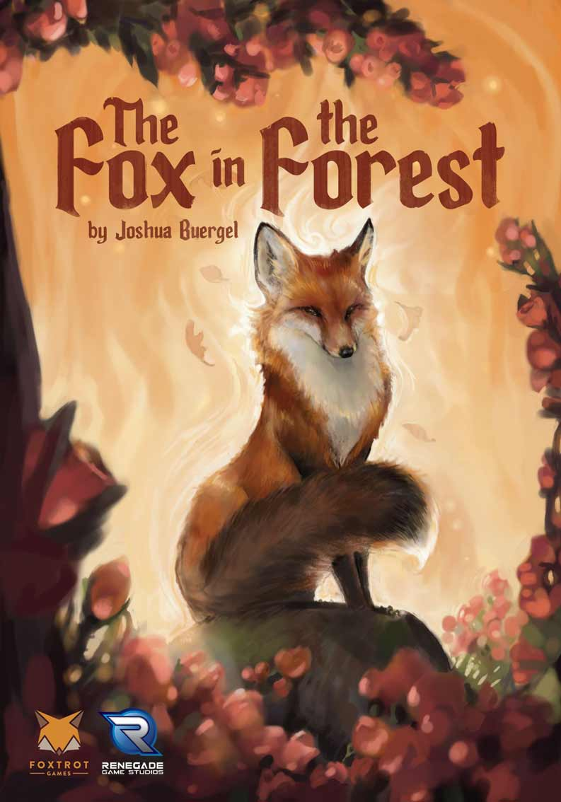
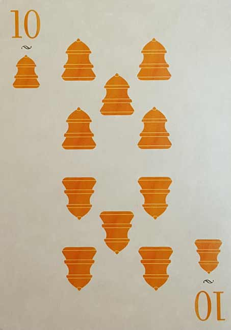
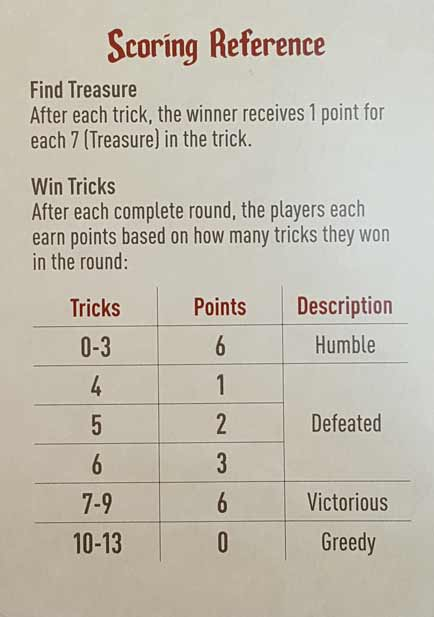
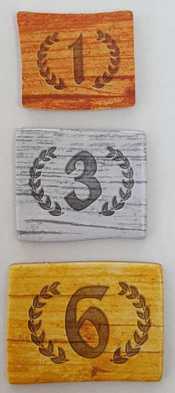
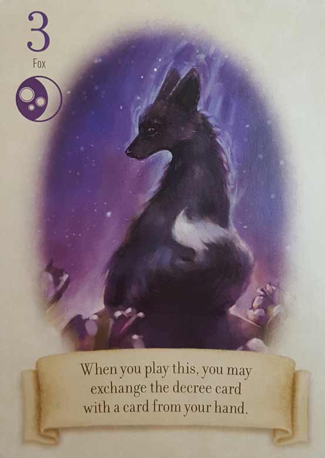
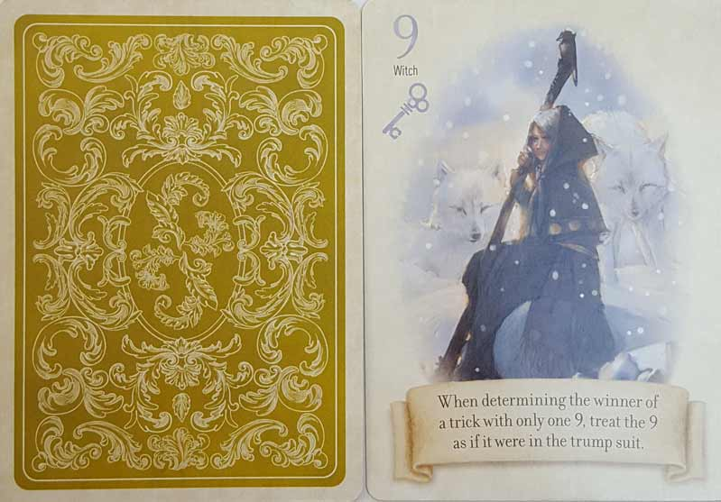

In this The Fox in the Forest review, D and Will analyze the fast-paced trick-taking game from designer Joshua Buergel and publishers Foxtrot Games and Renegade Game Studios. It was definitely a bold decision to make this a 2-player only game, as trick-taking games usually aren’t head-to-head experiences. So did this design risk pay off? Or is The Fox in the Forest a disappointment? To find out how we feel, continue on with our reviews below!

D reviews The Fox in the Forest
 (Author’s
note: this review is meant to accompany our gameplay video and will not
go in-depth on the game’s rules. If you’re interested in learning how
the game is played, please watch the video. It’s not bad.)
(Author’s
note: this review is meant to accompany our gameplay video and will not
go in-depth on the game’s rules. If you’re interested in learning how
the game is played, please watch the video. It’s not bad.)
The Fox in the Forest is the second trick-taking game we’ve covered here at Board Crazy, following Indulgence, which we played earlier this year. In my review for Indulgence, I mentioned that I am a fan of trick-taking games and upon further reflection, I might even go so far as to say that they are my favorite type of card game. I’m not particularly good at them, but they’re consistently tense and engaging, and there’s something about the constant one-upmanship that I find deeply satisfying. I gave Indulgence a largely positive review and have happily played it more since our video, but I’m disappointed to report that my feelings for The Fox in the Forest aren’t quite as enthusiastic.
My initial concerns came as I was reading through the rulebook, an experience which lasted about five whole minutes. I love nothing more than a game that explains its rules clearly and concisely, and I can’t say that The Fox in the Forest doesn’t do that, but that’s mostly because there’s almost nothing to learn. It’s a traditional trick-taking game, simply with a unique deck of cards and scoring system. If you know how to play a trick-taking game, you pretty much already know how to play this game. Needless to say, this is one of the “lightest” games we’ve covered so far in terms of complexity, with only Love Letter coming to mind as being objectively simpler. And there’s nothing inherently wrong with that – simple games can be just as satisfying as more complicated ones – but I started to worry when I considered the fact that this game is only designed for two players.
There is, from my perspective, a dearth of good, modern tabletop experiences designed specifically for two people. One of the challenges many tabletop gamers are faced with is simply finding other people to play with, so having a wide variety of games catered exclusively to pairs would seem to make sense, but that just isn’t the case. Most games will support only two players, but are clearly designed for (and play better with) at least three, and I think this is a shame. However, while I can respect the designers of The Fox in the Forest for making their game for only two people, I just don’t think that that sort of restriction does the game any favors.
Like basically all card games, there is a degree of luck involved in The Fox in the Forest, but this gets emphasized when the player count is limited to two and re-emphasized when certain cards have special abilities. The (admittedly clever) scoring system tries to account for this by rewarding a player who loses ten or more tricks, but there’s only so much that can be done. For example, a player who wins a trick in which a 7 was played earns a point. With cards numbered 1-11, a 7 is a reasonably powerful card, and with only two players involved it is not at all unlikely that one of the players will end up with all three of them in their hand. Similarly, 9’s will almost automatically win tricks if played well. Obviously luck can swing back-and-forth, but I still find it annoyingly prevailing in this game. Adding more players into the mix would spread the cards around, make luck less prominent, and make strategy much more thoughtful. And it lacks drama! Half the fun of trick-taking games is that moment when you, the fourth and final player of the hand, steal the trick from your opponent with an unexpected trump card. When each trick is only two cards, there isn’t any time for tension to really mount or for a win to be satisfying.
Now perhaps, dear reader, none of that really bothers you. Maybe you’re more concerned with simply having a two-player game that is quick and easy to learn. Fine, I suppose you could do worse. I’d probably rather play The Fox in the Forest than checkers/draughts. But Onitama exists! So does Tak. And also plenty of other older games that I think provide a better experience for those who have to budget both their time and finances. The Fox in the Forest has some good ideas, and I hope it inspires more designers to make two-player games, but overall I think its flaws outweigh any fun it’s capable of providing.
D’s Rating: Two and One-Half Stars out of Five.
Will reviews The Fox in the Forest
 Trick-taking
is right up there with my favorite mechanics – it’s easy to learn, easy
to play, but difficult to master. For some reason beyond my
understanding, the board gaming gods have imbued me with the ability to
thrive when playing this kind of game. Or maybe it’s merely good luck.
Regardless, this is why I usually end up more appreciative of
trick-taking games than my colleagues after we play them. The Fox in the Forest is
no different – I know I liked it a lot more than D or Graham. On the
positive side, it’s well illustrated, simple yet clever, and designed
for multiple play-styles. Unfortunately, there’s almost an equal amount
of negatives holding it back from greatness.
Trick-taking
is right up there with my favorite mechanics – it’s easy to learn, easy
to play, but difficult to master. For some reason beyond my
understanding, the board gaming gods have imbued me with the ability to
thrive when playing this kind of game. Or maybe it’s merely good luck.
Regardless, this is why I usually end up more appreciative of
trick-taking games than my colleagues after we play them. The Fox in the Forest is
no different – I know I liked it a lot more than D or Graham. On the
positive side, it’s well illustrated, simple yet clever, and designed
for multiple play-styles. Unfortunately, there’s almost an equal amount
of negatives holding it back from greatness.
Component-wise, there’s almost nothing to The Fox in the Forest. There are only 33 cards (three sets of 11), a handful of scoring tokens, and the rulebook/sheet. Oh, and there are a couple cards that explain the rules and special abilities – I love cheat sheets. The cards themselves are made from basic card stock, and the scoring tokens are cardboard, so nothing to write home about in this regard. It’s a simple game with simple components, and for that reason, The Fox in the Forest is very affordable (usually found for $10-15). As for the artwork, I really liked it – it’s detailed and vivid. Sure, this game’s theme is kind of tacked on, but that doesn’t take away from the art’s appeal.
As I’ve already said, this game is simple, but that doesn’t mean it’s without cleverness or nuance. Like other trick-taking games, you deal out a set amount of cards to each player. In this 2-player game, each person is dealt 13 cards and then the top card of the deck is flipped, determining the trump suit. The cards only go up to 11 (not a Spinal Tap reference), which is the highest value for each of the three suits. Since only 26 of the 33 cards are dealt to the players, there will always be seven left over, which means no two rounds are ever identical and there’s no guarantee you’ll get the highest cards. One of the more thoughtful and unique things the designer (Joshua Buergel) did is give each of the odd-numbered cards special artwork and abilities. These odd cards contribute to the most compelling moments of The Fox in the Forest, but also to the most frustrating.
If everything goes well, both players will be dealt a nice mix of the odd-numbered cards. In this ideal setup, the game is immensely satisfying to play. Take for instance The Fox Card – it only has a value of 3, which means it likely won’t take too many tricks. And yet its special ability, which allows players to exchange a card from their hand for the flipped trump card, can change the course of a round. After all, being able to change the trump suit to one that you have a lot (or few) cards of can shift the course of a round in your favor. But if your opponent also has a Fox, he/she could flip the script. These moments are exciting, heartbreaking, and hilarious all at the same time. All of the other odd-numbered cards are like this – they’re useful, creative, and fair (in theory).
Unfortunately, card games often don’t play out the way you’d hope they would. And I don’t mean that one player gets all of the high cards and another gets all of the low ones. In fact, this game was designed to avoid that kind of thing being a problem, a point on which I’ll elaborate soon. No, what I meant is that the randomness of shuffling and dealing leads to issues where one player can end up with an imbalance of powerful, odd-numbered cards. This has happened a lot in our games, but there was an even more prevalent issue – The Foxes. Too often in our games, one player ended up with all three Fox cards. In this situation, that player ultimately has complete control over the trump suit, which means they have too much control. Since The Fox in the Forest is only a 2-player game, this kind of thing is way more noticeable and occurs too often. A disparity of other cards, like the 7s that allow players to collect a point if they win the trick, can also create further imbalances. For such a seemingly easygoing game, man can it create frustration.
Now I must admit, the scoring system was designed to mitigate some of the problems I just pointed out. In what may seem counter-intuitive to some, the more tricks you take in this game, the fewer points you may earn. There are two sweet spots: 0-3 and 7-9. If you collect an amount of tricks that falls within those two ranges, you’ll earn the maximum amount of points (6). However, collect too many (10-13) and you’ll earn a big fat zero. So if you have a boatload of high cards in your hand, it doesn’t automatically equate to an easy win. In fact, it can often create more problems. This is just another way The Fox in the Forest is unique and fair. Then again, I do think that if you collect all 13 tricks, then you should earn points. After all, that’s not easy to do and requires as much skill as it does to lose all 13 tricks, so why does taking zero earn you points and taking 13 doesn’t? Like almost all of this game’s facets, there are frustrating, contentious elements to go with the good ones.
On the whole, The Fox in the Forest is an entertaining trick-taking game with some unique, quirky qualities. At the same time, the randomness of shuffling and dealing creates questionable balance more often than it should. To me, a lot of the issues I had with the game could’ve been fixed with a simple solution: up the player count. In 2-player games, it’s impossible to avoid bad luck or unfair draws, and imperfections in design are much more noticeable. Thinking about it though, perhaps Joshua Buergel wanted The Fox in the Forest to only ever be a 2-player game. Perhaps he took into consideration that there were potential weak spots in the design that may lead to imbalances and instead focused on mitigating them with the scoring system, which I found to be brilliantly crafted. After all, The Fox in the Forest is a lighthearted card game and not some heavy, tactical strategy game. Judging it for what it is, I’m not going to hold it to the same standards as I would something weightier. I had a decent time playing it, and at the end of the day, that matters most.
I give The Fox in the Forest a: B-
Leave a Reply
You must be logged in to post a comment.